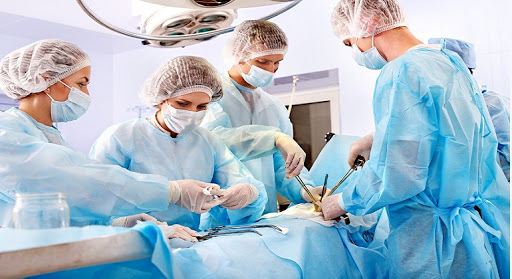
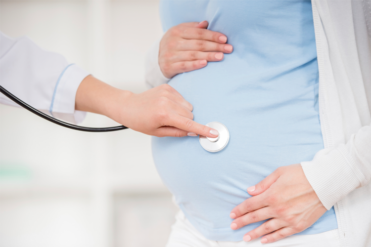
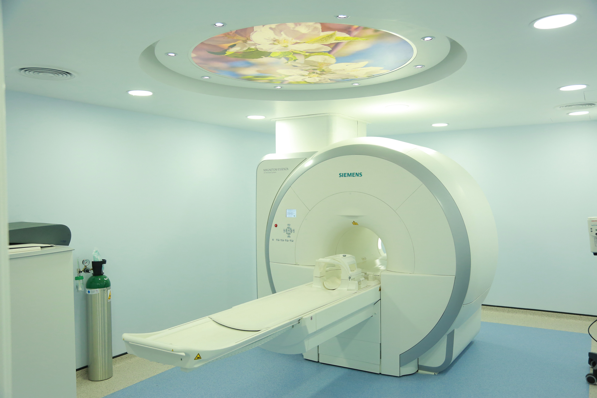
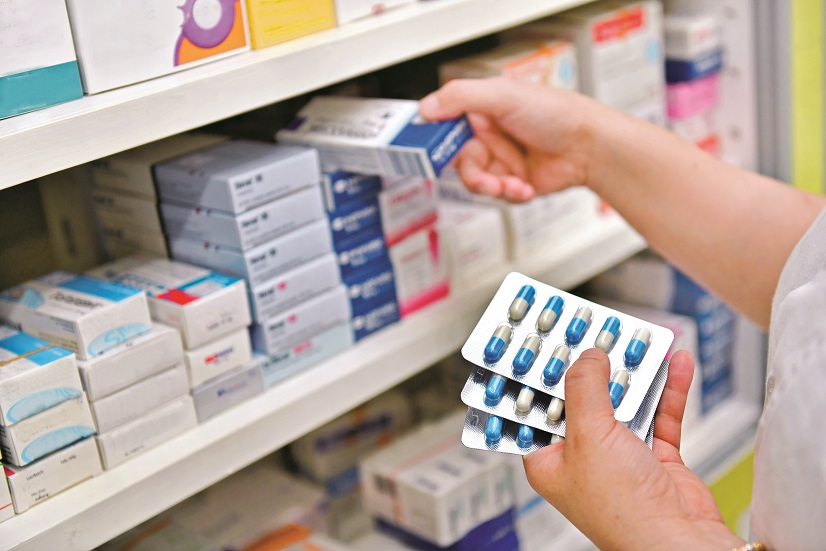
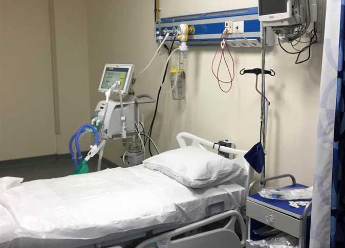
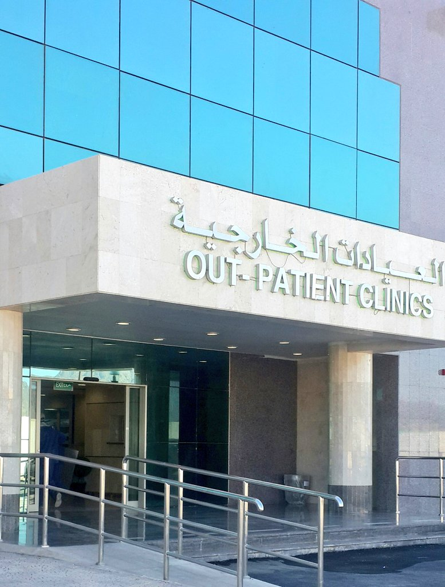

الانف والاذن والحنجرة
.jpg)
يعتبر هذا القسم من أكثر أقسام المركز الطبي الدولي حيويةً ونشاطاً، ويتكوّن من فريق مؤهل بدرجة عالية لعلاج المرضى الذين يعانون من فقدان السمع واختلال التوازن والشخير وأمراض الأنف والأذن والحنجرة وانقطاع التنفس أثناء النوم، كما يقدّم خدمات تتعلق بجراحة الأنف والأذن والحنجرة للأطفال والجراحة المجهرية المتقدمة لعلاج السرطان، إلى جانب وجود مختبر متطوّر فيه لفحص الأطفال الرضّع. ويقدّم القسم كذلك خدمات استشارية لتزويد المرضى بأكبر قدر من المعلومات حول جميع خيارات العلاج المتاحة ويُشجّعهم على التفكير بتمعّن في هذه الخيارات، كما يحثّهم على تزويد القسم بأكبر قدر ممكن من المعلومات حول حالتهم المرضية ليحصلوا بالمقابل على أفضل مساعدة ممكنة.
ويتمتع مرضى قسم جراحة الأنف والأذن والحنجرة / جراحة الرأس والرقبة بميزة فريدة من نوعها تتمثّل بالحصول على الاستشارة وتلقّي العلاج في مكان واحد وعلى أيدي خبراء مختصين. ولا يزال فريقنا المتفاني الذي يؤمن بالعمل الجاد يساهم في كتابة قصص نجاح كثيرة، وذلك بفضل العلاجات المبتكرة التي يوفّرها المركز الطبي الدولي والتي يوظّفها قسم جراحة الأنف والأذن والحنجرة / جراحة الرأس والرقبة لعلاج العديد من المرضى الذين لم يحظوا في الماضي بأية خيارات لعلاج أمراضهم.
ويتسم العديد من أطباء القسم بأنهم خبراء في التخصصات الفرعية، أي أن لديهم اطّلاعاً واسعاً وخبرة كبيرة في جراحة الأنف والأذن والحنجرة، وهم مؤهلون بدرجة كبيرة لتقديم الرعاية الجراحية المتخصصة للمرضى، وتشمل جراحة الرأس والرقبة وجراحة الجيوب الأنفية والجراحات التجميلية للأنف، إلى جانب الجراحة المجهرية للحنجرة والجراحة المجهرية للأنف وجراحة التخلص من الشخير. إضافة لذلك، يستعين أعضاء فريقنا بأحدث المنشآت والمعلومات الطبية لتشخيص اضطرابات الأذن الداخلية والحالات التحسسية ورائحة الفم الكريهة والسيطرة عليها.
الخدمات التي يقدمها القسم
-
جراحة الغدة الدرقية
-
جراحة الجيوب الأنفية بالمنظار
-
جراحة الأنف المجهرية
-
جراحة الأنف التجميلية
-
جراحة الحنجرة المجهرية
-
جراحة الأنف والأذن والحنجرة للأطفال
-
تشخيص أمراض الأذن الداخلية والسيطرة عليها
-
فحص السمع عند حديثي الولادة
-
قياس طبلة الأذن
قسم الجراحة

هي تخصص جراحي يركز على ما بداخل البطن من أعضاء وأجهزة متضمنة المريء والمعدة والأمعاء الدقيقة والقولون والكبد والبنكرياس والمرارة والقنوات الصفراوية وغالباً الغدة الدرقية (اعتماداً على توفر جراح متخصص في جراحة الرأس والعنق). كما تشمل أيضاً الأمراض المتعلقة بالجلد والثدي والأنسجة والفتاق.
المجالات :
يمكن للجرّاح العام أن يتابع تعليمه في إحدى التخصصات الفرعية أوالدقيقة التالية:
جراحة الحوادث
تقع المسؤولية العظمى في علاج الإصابات في الولايات المتحدة وكندا على الجراحة العامة ويحصل بعض الجرّاحين على تدريب متقدم وشهادة للتخصص في هذا المجال فقط. يجب على الجرّاحين العامين أن يكونوا قادرين على التعامل مع جميع الحالات التي تستدعي عملية جراحية طارئة فغالباً يكونون أول من يُستدعى لأي مريض في حالة حرجة أو مصاب بشكل خطير ويجب أن يقوموا بإجراءات عديدة لضمان استقرار حالة المريض مثل إدخال أنبوب التنفس وثقب الجمجمة وفتح الغشاء الحلقي أوإجراء عمليات فتح البطن الطارئة لإيقاف النزيف. كل الجرّاحين العامين مدربين على الجراحات الطارئة. ويتعاملون مع حالات النزيف والالتهابات وانسدادات الأمعاء وثقب الاعضاء. تعد عملية استئصال المرارة من أشهر العمليات الجراحية على مستوى العالم وغالباً تكون في مواعيد محددة لكن من الممكن أن تلتهب المرارة بشكل حاد وتستدعي عملية طارئة، كما تعد عمليات انفجار الزائدة الدودية وانسداد الأمعاء الدقيقة من أشهر العمليات الطارئة.
جراحة المناظير
هي إحدى التخصصات الجديدة نوعاً ما التي تعتمد على استخدام تقنيات وأدوات دقيقة باستخدام الكاميرا من خلال إحداث قطوع صغيرة (0,3-1سم) وتندرج جراحات الرجل الآلي تحت جراحة المناظير. يمكن إزالة المرارة والزائدة الدودية والقولون باستخدام هذه التقنية. كما أن عمليات إصلاح الفتوق أصبحت تُجرى غالباً بالمناظير الآن ومعظم جراحات السمنة كذلك ويُتوقع أن يكون الجرّاحين الذين تدربوا في هذه الفترة من المتخصصين في إجراءات المناظير.
جراحة القولون
يعالج أطباء الجراحة العامة العديد من أمراض القولون والمستقيم الكبرى أوالصغرى متضمنة أمراض الأمعاء الالتهابية (مثل القولون المتقرح أو مرض كورنز) والتهاب الزوائد وسرطان القولون والنزيف من الجهاز الهضمي والبواسير.
جراحة الثدي
يعمل الجرّاحين العامين معظم عمليات الثدي غير التجميلية بدءاً بإزالة الأورام إلى استئصال الثدي خصوصاً من أجل تشخيص سرطان الثدي.
جراحة الأوعية الدموية
يستطيع المتخصصون في الجراحة العامة القيام بعمليات الأوعية الدموية إذا تلقوا تدريباً خاصاً وشهادة في جراحة الأوعية، ما عدا ذلك تُؤدى تلك العمليات بواسطة جرّاح أوعية دموية متخصص مع أنه لديه القدرة على علاج أمراض الأوعية الدموية البسيطة.
جراحة الغدد الصماء
يتم تدريب المتخصصين في الجراحة العامة على إزالة الغدة الدرقية أو جزء منها أو غدد الجارات الدرقية في الرقبة والغدد الكظرية فوق الكلى في البطن وفي معظم المجتمعات هم الوحيدون المدربون على ذلك. أما في بعض المجتمعات التي لديها عدد من التخصصات الدقيقة فإنه يمكن للجرّاحين المتخصصين القيام بمثل هذه العمليات.
جراحة الجلدية
يقوم المتخصصون في الجراحة العامة بأنواع متعددة ومختلفة من الجراحات المتعلقة بالجلد من مجرد إزالة شامة مشتبه بها إلى علاج الحروق العظمى، كما يستطيعون إزالة الأورام التي تنمو تحت الجلد مثل الأورام الدهنية وأورام العضلات أو الأنسجة. يعالجون أيضاً أمراض جلدية أخرى معقدة أو التهابات تحت الجلد وغالباً ما يقومون بوضع رقع جلدية لتغطية العيوب الجلدية الناتجة من الحروق والإصابات.
قسم الباطنة
هو الاختصاص الطبي الذي يتولى مسؤولية منع، وتشخيص، وعلاج أمراض البالغين. يسمى الطبيب المتخصص في هذا المجال باسم طبيب باطني. يجب أن يكون الطبيب الباطني ماهرًا في إدارة المرضى ذوي الأمراض المتعددة في أجهزة الجسم. يتولى أطباء الباطنة كذلك العناية بالمرضى المحجوزين في المستشفى إلى جانب الذين يرحلون لمنازلهم وقد يلعبون دورًا هامًا في التدريس والبحث العلمي. نظرًا لأن مرضى الطب الباطني كثيرا ما يكونون في حالة مرضية خطيرة أو يحتاجون اختبارات معقدة، فإن أغلب عمل الأطباء الباطنيين يكون في المستشفى. وقد يكون للطبيب الباطني تخصص فرعي في الأمراض التي تصيب أعضاء معينة أو جهاز معين
الخدمات التي يقدمها القسم
-
متابعة مرضى القلب و الضغط السكري .
-
معالجة إرتفاع ضغط الدم و الكولسترول .
-
علاج و متابعة أمراض كبار السن .
-
إجراء التقييم الصحي الدوري .
-
تشخيص أمراض و مشكلات الكلى المختلفة .
-
معالجة مشاكل إضرابات الجهاز الهضمي .
-
تشخيص ومعالجة جرثومة المعدة.
-
علاج الفيروسات الكبدية.
قسم الأطفال و عناية الأطفال
وصف الخدمة
-
- متابعة الاطفال الأصحاء من الولاده حتي عمر ١٦ سنه
-
الفحص الدوري وعمل الفحوصات الروتينية للأطفال مثل الحديد ، فيتامين د ، صوره دم كامله والعناصر الحيويه الهامه
-
عمل اللقاحات الروتينية لحديثي الولادة والأطفال الكبار
-
متابعة وعلاج جميع الامراض الحاده ، المذمنه و الطارئة عند الاطفال مثل نوبات الربو الحاده
-
ارتفاع درجات الحرارة الناتجه عن كل انواع العدوي الفيروسية او البكتيريه ، نقص الحديد ، نفص فيتامين د نقص الوزن
-
علاج جميع امراض الجهاز الهضمي عند الاطفال مثل القيء، الاسهال ، الام البطن المتكرر وحالات الجفاف
-
حجز ورعايه واعطاء محاليل عن طريق الوريد ، اعطاء استنشاق بالبخار للحالات الحرجه
-
التهابات البول والتبول اللاارادي عند الاطفال
قسم النساء و الولادة

وصف الخدمة
-
استشارة طبية وفحص لمتابعة الحمل وجميع أنواع السرطان النسائية.
-
الفحص بالموجات فوق الصوتية لمتابعة الحمل والمضاعفات وإدارة مضاعفات الحمل المبكرة
-
متابعة حالات الحمل وبرامج المتابعة الشاملة.
-
تركيب جميع وسائل منع الحمل.
-
تشخيص العيوب الخلقية لدي الجنين.
-
تحديد جنس الجنين.
-
علاج تقرحات الرحم بجهاز الكي بالتبريد.
-
تقديم النصائح والاستشارات الصحية والغذائية للأم أثناء فترة الحمل وما بعد الولادة
قسم العناية المركزة
هو قسم خاص في المستشفى يقدم أقصى أنواع الرعاية الصحية الممكنة ويتميز عادة بنسبة الممرضيين إلى المرضى تساوي 1:1 (أي ممرض لكل مريض). وتخصص أسرة العناية المركزة للمرضى أصحاب الحالات الحرجة والخطيرة حيث توافر بها كادر طبي وأجهزة الإنعاش لحين الحاجة لها و جهاز التنفس الاصطناعي.
تم تجهيز وحدة العناية المركزة بأحدث التقنيات التي تسمح بإجراء كافة الاجراءات التي تتطلبها العناية المركزة، كرصد الدورة الدموية، والتهوية الميكانيكية والتداخلات الجراحية باستخدام أجهزة الموجات فوق الصوتية، بالإضافة إلى التنظير الرئوي وغيرها.
-
تقيم الاستشارات اللازمة للمرضى في مختف اقسام المستشفى في حالة حدوث اضراب حاد في العلامات الحيوية.
قسم الطوارئ والأسعاف
-
يقدم القسم خدمات الطوارئ على مدار 24 ساعه ويستقبل جميع المرضى للعلاج , ويعمل القسم وفقا لنظام يتم على أساسه توزيع المرضى على قسمين أحدهما للرجال والثانى للنساء .
-
كما أن فريق العمل في قسم الطوارئ على درجة عالية من الكفاءة والخبرة ومتخصص في تقديم الخدمات العلاجية الطارئة لجميع المرضى في غرف مجهزة بالكامل تحتوي على أسرة وقادرة على تقديم العناية الطارئة لكل الحالات الحرجة بما فى ذلك تقديم الإنعاش السريع واستقرار الحالات ونقل الحالات الخطرة منها إلى العناية المركزة بالمستشفيات الكبرى .
-
ويوفر القسم رعاية متقدمة لمرضى الاصابات الذين يتم إحضارهم ,ويتم التعامل مع مرضى الحالات غير العاجلة (مثل التطعيم وغيره) في منطقة خاصة لتقديم الرعاية السريعة.
-
في قسم الطواريء يتم إتباع نظام فرز المرضى لتحديد درجة الخطورة للحالات الإسعافية وبالتالي يتم إعطاء الأولوية للحالات الأكثر خطورة وفضل الحالات الأقل خطورة أو غير الإسعافية ، كما يتوفر في قسم الطواريء فريق تمريضي متدرب بشكل خاص للتعامل مع الحالات الإسعافية الخطيرة ويقوم بخدمة متميزة للمرضى .
يقدم القسم خدمات الطوارئ على مدار 24 ساعه ويستقبل جميع المرضى للعلاج , ويعمل القسم وفقا لنظام يتم على أساسه توزيع المرضى على قسمين أحدهما للرجال والثانى للنساء .
كما أن فريق العمل في قسم الطوارئ على درجة عالية من الكفاءة والخبرة ومتخصص في تقديم الخدمات العلاجية الطارئة لجميع المرضى في غرف مجهزة بالكامل تحتوي على أسرة وقادرة على تقديم العناية الطارئة لكل الحالات الحرجة بما فى ذلك تقديم الإنعاش السريع واستقرار الحالات ونقل الحالات الخطرة منها إلى العناية المركزة بالمستشفيات الكبرى .
ويوفر القسم رعاية متقدمة لمرضى الاصابات الذين يتم إحضارهم ,ويتم التعامل مع مرضى الحالات غير العاجلة (مثل التطعيم وغيره) في منطقة خاصة لتقديم الرعاية السريعة.
في قسم الطواريء يتم إتباع نظام فرز المرضى لتحديد درجة الخطورة للحالات الإسعافية وبالتالي يتم إعطاء الأولوية للحالات الأكثر خطورة وفضل الحالات الأقل خطورة أو غير الإسعافية ، كما يتوفر في قسم الطواريء فريق تمريضي متدرب بشكل خاص للتعامل مع الحالات الإسعافية الخطيرة ويقوم بخدمة متميزة للمرضى .
قسم عناية حديثي الولادة
رعاية الطفل الرضيع (حضانة الأطفال حديثي الولادة):
رعاية الأطفال الأصحاء بعد الولادة، وتثقيف الآباء حول رعاية حديثي الولادة.
وحدة العناية المركزة لحديثي الولادة تتكون من 24 سريراً وتوفر الرعاية لما يلي:
-
الأطفال الخدج من 23 أسبوعا أو الأطفال المولودون بوزن قليل مثل 500 غرام.
-
صغر الحجم بالنسبة لسن الحمل.
-
يرقان حديثي الولادة.
-
متلازمة الضائقة التنفسية الحادة وغيرها من حالات أمراض حديثي الولادة.
-
الإنتان الوليدي
-
نقص السكر في الدم.
-
متلازمة الشفط العقي.
-
نقص الأكسجين الدماغي.
-
انسداد الأمعاء.
-
الشذوذ القلبي.
-
التشوهات الخلقية.
-
فرط ضغط الدم الرئوي
-
اعتلال الشبكية لدى الخدج.
-
الناسور الرغامى المريئي.
ونقدم الخدمات التالية:
-
جراحة الأطفال
-
علاج أمراض القلب للأطفال
-
جراحة القلب للأطفال
-
علاج أمراض الرئة للأطفال، و الغدد الصماء، وأمراض الكلى، و الأمراض المعدية، و المسالك البولية، و جراحة الأعصاب. وهذه الوحدة مدعومة بخدمات مخبرية متخصصة, و بأحدث الأجهزة والتقنيات الطبية.
قسم الأشعة

الخدمات التي يقدمها القسم :
-
تصوير صوتي للأجنة 3D و 4D .
-
تصوير ثدي سيني وصوتي.
-
يرقان حديثي الولادة.
-
أشعة تداخلية وتشخيصية لأورام الثدي وعلاج شفط سوائل مع علاج مفاصل.
-
تصوير صوتي وطبقي ومغناطيسي للشرايين
-
تصوير طبقي للجهاز البولي وحصى الكلى.
-
تصوير الموجات الصوتية لجميع التخصصات.
-
تصوير سيني لجميع التخصصات.
قسم المختبر و بنك الدم
الخدمات التي يقدمها القسم :
-
إجراء كافة أنواع التحاليل و الفحوصات الطبية
-
إجراء جميع التحاليل الطبية المتخصصة للقلب
-
إجراء فحوصات الفيروسات و البكتيريا
-
تقديم خدمات نقل الدم ومشتقاته لمرضى المركز على مدار الأربع و العشرون ساعة
الصيدلية

يقوم القسم بتوفير خدمات صرف العلاج للمرضى من جميع الفئات العمرية و جميع هذه الخدمات تجرى بما يتماشى مع المعايير المهنية و الأخلاقية مع تلبية كافة المتطلبات القانونية.
كجزء من النشاطات اليومية يقوم الصيادلة بتقييم معلومات المريض مثل البيانات السكانية و العلامات الحيوية و القيم المخبرية و الحميات العلاجية و الاستجابة للعلاج، علاوة على تعاونهم مع أعضاء الفريق الصحى العامل و المرضى و مقدمى الرعاية بغرض تقديم رعاية تركز على المريض و تقوم على القيمة. كذلك يساعد كل من فنيي الصيدلة و مساعدى الصيادلة و طلاب الصيدلة فى تقديم الرعاية الصيدلانية تحت الإشراف المباشر من الصيدلى السريرى.
تسترشد الخدمات الصيدلانية فى عملها بمعايير الجمعية الامريكية للصيدلة، و الكلية الامريكية للصيدلة السريرية، و معهد سلامة العلاج، و الهيئة الدولية المشتركة، و إدارة الدواء و الغذاء السعودية، و دستور الأدوية الأمريكى.
ساعات العمل
-
صيدلية الطوارئ: 24 ساعة يومياً
-
التنويم: 24 ساعة يومياً
-
العيادات و المرضى الخارجيين: من 8 ص - 5 م.
قسم العلاج الطبيعي
ماهو العلاج الطبيعي وماذا يساعد ؟
العلاج الطبيعي هو التقييم والعلاج والوقاية من اختلال وظائف العضلات والعظام عن طريق استخدام وسائل مادية بما فيها العلاج اليدوي والتدريبات والتمارين والعلاج الكهربائي أو تقديم النصائح. ويحتوي التقييم على استعراض كامل لتاريخ الحالة
يمكننا تخفيف الألم عنك لتحصل على كامل وظائف قدراتك والقيام بكل الأشياء التي تريد القيام بها، سواء كانت الإصابة بسبب الرياضة أو حادث أو مشكلة مزمنة مثل آلام الظهر أو الرقبة، فالعلاج الطبيعي يتواجد ليساعدك!
ماذا يمكننا أن نعالج ؟
يمكننا علاج العديد من المشاكل بما فيها الآلام والالتهابات وتشنج العضلات. كما تستجيب للعلاج الطبيعي بشكل جيد أيضاً مشاكل الرقبة والظهر، عرق النسا، الصداع والإصابة، إضافة إلى الإصابات الرياضية مثل أوتار الركبة، المرفق، قصبة الساق، الغضروف، الرباط، بعد عمليات استبدال المفاصل، ومشاكل العظام مثل الكسور، كما يمكن توفير تحسين الحركة الحيوية للجسم. وفي حال تم تشخيص حالتك بهشاشة العظام أو التهاب المفاصل أو لديك مشكلة في المفاصل، يمكننا توفير النصائح والتمارين )بما فيها التمارين المائية( والعلاجات لتخفيف الآلام. ويمكن أن يستخدم العلاج الطبيعي في علاج حالات عديدة من مشاكل العضلات. كما أنك لست بحاجة لأن تكون رياضياً كي تستفيد من خدمات العلاج الطبيعي إذ يمكنك في مستشفى دلّه الاستفادة من هذه الخدمات مهما كان سبب الإصابة أو الألم وتحصل على العلاج الفعال بجودة عالية بأسرع وقت. كل مرافقنا مجهزة بأحدث الأجهزة الطبية والمعدات المتطورة من أجل تعزيز قدرتنا على رعايتك على أكمل وجه. ولدينا مرافق تأهيل متخصصة مصممة خصيصاً لتساعد في استعادة صحتك بأمان وبأسرع وقت ممكن بعد تعرضك لإصابة أو مرض.
خدمات العلاج الطبيعي :
-
العلاج الكهربائي
يحتوي على الأجهزة الطبية المتخصصة في مجال التأهيا والعلاج الطبيعي والتي تقوم بدور مهم في تخفيف الألام , وتنشيط العضلات والأعصاب وما لها دور في في تخفيف الإنتفاخ الناتج عن الإصابات الرياضيةولقد إهتمت المستشفى في توفير ما هو جديد ومتطور من تقنيات في هذا المجال
-
العلاج المائي
وهو من إحدى طرق التأهيل والعلاج الطبيعي للعديد من الحالات ما بعد الكسور وعمليات المنظار وحالات الام الظهر
-
العلاج اليدوي
وهو من طرق العلاج الطبيعي المتطورة والمتخصصة في علاج إصابات الأطراف العلوية والسفلية, حيث يتواجد مختصين في العلاج الطبيعي ذو كفائات عالية وقد تم توفير جميع الوسائل المساعدة والأجهزة اللازمة لهذه الحالات المرضية
-
علاج الأطفال
توفير كل ما يلزم من متخصصين في مجال علاج حالات الأطفال وتوفير جميع الوسائل اللازمة والأجهزة المساعدة لتوفير أفضل الطرق العلاجية.
-
التمارين العلاجية
قسم التثقيف الصحي
نبذة عن القسم :
هي إحدى مبادرات تطوير الرعاية الصحية الأولية في الوكالة المساعدة للرعاية الصحية الأولية، حيث تهدف مبادرة عيادات التثقيف الصحي إلى رفع نسبة الوعي ودرجة التحكم الذاتي للأمراض المزمنة؛ للحد من المضاعفات والتعايش مع المرض، وذلك عن طريق جلسات تثقيفية لكل مراجع حسب حالته الصحية لمتابعته وتقييمه مما ينعكس على جودة الحياة للمراجع. وتهدف بشكل رئيسي إلى تعزيز مفهوم الرعاية الصحية الذاتية لدى أفراد المجتمع، وتماشيًا مع مبادرات التحول الوطني لرؤية المملكة 2030
قسم التغذية العامة

الخدمات المتوفرة
-
معاينة للتحقق من الحالة الصحية وتحديد التعديلات في نمط الحياة المرتبطة بالتغذية
-
إجراء الفحوصات الطبية لاستبعاد أي مشكلة محتملة لأجهزة الجسد التي يمكن أن تؤثر على حالة المريض بشكل سلبي
-
تشجيع المرضى على تغيير نمط حياتهم إذا لم يكونوا نشطين ونصحهم بممارسة الرياضة بانتظام
-
المتابعة الأسبوعية أو على النحو الموصى به لإجراء التعديلات على النظام الغذائي للمرضى
قسم التغذية العلاجية
ماهي التغذية العلاجية :
التغذية العلاجية هي استخدام الغذاء كوسيلة علاجية والاستفادة من العناصر الغذائية الموجوده في الطعام للتغلب علي العديد من المشكلات الصحية و الوقاية منها فهي أمر أساسي في علاج الكثير من الأمراض،و في بعض الاحيان تكون الوسيلة الوحيدة للعلاج منها
أهمية التغذية العلاجية
- تخفيف الأعراض المرضية المصاحبة لبعض الامراض و التي تزعج المريض. - الوقاية من المضاعفات المصاحبة لبعض الامراض و التقليل منها. - تقوية الحالة الصحية للفرد والوقايه من سوء التغذية .
قسم العزل

يمثّل العزل، في مرافق الرعاية الصحية أحد الإجراءات المتعددة التي يمكن تنفيذها لتطبيق مكافحة العدوى، بحيث يمنع انتقال الأمراض المعدية من مريض ما إلى مرضى آخرين وإلى العاملين في الرعاية الصحيّة والزوّار، أو من أناس من الخارج إلى أحد المرضى (وهذا هو العزل المضادّ). توجد أشكال متعددة للعزل، يتضمن بعضها طرق تواصل طفيف، بينما يتضمن بعضها الآخر إبقاء المرضى بعيداً عن الآخرين.
يُطبّق العزل عادةً عندما يكون المريض مصاب بمرض فيروسي أو بكتيري مُعدٍ (ويكون قابلاً للانتقال من شخص لآخر بغضّ النظر عمّا إذا كان الشخص قد أصيب بهذا المرض من قبل أم لا). يتمّ استخدام معدّات خاصّة في تدبير شؤون المرضى الخاضعين للأشكال المتعددة من العزل. وعادةً ما تتضمّن معدات الوقاية الشخصية، كالمعاطف والأقنعة والقفازات، وأدوات التحكم الهندسية، كغرف الضغط الإيجابي والضغط السلبي ومعدّات تدفق الهواء الصفحي والحواجز الميكانيكية والهيكلية المتنوعة. قد يتم بناء أقسام عزل مخصّصة مع بناء المستشفى، أو قد يتمّ تخصيص وحدات للعزل داخل المباني الطبية بشكل مؤقت عند حدوث حالات طوارئ وبائية.
قسم التخدير والعمليات

نبذة عن القسم :
يقسم التخدير إلى نوعين الأول هو التخدير العام والثاني هو التخدير الموضعي، فالتخدير العام هو تخدير الجسم كاملاً وهو يستخدم عندما تكون العملية الجراحية عملية صعبة معقدة، حيث يؤدي التخدير شلل المريض الكامل والمؤقت كما أنه يفقده ذاكرته ووعيه وبالتالي يفقد إحساسه بالألم، في حين يكون التخدير الموضعي لمنطقة معينة من مناطق الجسم وهي المناطق التي سوف تجرى فيها العملية الجراحية وهذا النوع من التخدير يستخدم عندما تكون العملية بسيطة غير معقدة فيخدر المكان المحدد فقط. والتخدير يكون باستعمال أدوية معينة وخلطات يتم إعطاؤها للمريض بحسب تقديرات الطبيب المختص، بحيث انه إذا اختلت هذه المقادير سوف تحصل نتائج لا تحمد عاقبتها. وكل هذا من شأنه أن ييسر عمل الطبيب وأن يؤمن الراحة الكاملة للمريض، والتخدير هو من أعظم نعم الله تعالى علينا، فلولاه لما كان بالإمكان إجراء العمليات المعقدة كالتي تجري الآن و بالتالي لما حصل كل هذا التقدم والتطور الطبي الذي نشهده الآن.
العيادات الخارجية

وصف الخدمة
حن نُوفر أفضل مُستوى من الرعاية للمرضى الذين يتطلبون العلاج في العيادات الخارجية، أَيّمَا كان للاستشارة أو للتشخيص أو لإجراءات الجراحة، أو للاختبارات التشخيصية الأخرى.
مهام العيادات الخارجية :
-
استقبال المرضى وتسجيل بياناتهم وتصنيفهم وتوجيههم حسب احتياجاتهم.
-
استقبال المرضى وتشخيص حالتهم وتقرير العلاج اللازم لهم
-
التأكد من دقة واكتمال جداول مواعيد الممرضات والاطباء وتوفير متطلبات تحديثها بما يمكن من التوائم مع احتياجات المرضى.
-
التأكد من حسن معامله المرضى وتقديم الخدمات الاولية اللازمة وفق ما يتم تحديده من معلومات عن المريض وتحليلها.
-
متابعة اخر بيانات المريض والتأكد من اجراء الفحوصات العامة والموضوعية وتشخيص الحالة بدقة.
-
القيام بأعمال تحويل للمرضى التي تستدعى حالتهم دخول المستشفى.
-
اجراء الفحوص الطبية والتحاليل والاشعة التشخيصية لتقرير العلاج المناسب للحالات .
-
التأكد من تسجيل جميع الحالات وجميع البيانات المتعلقة بها واتخاذ ما يلزم من اجراءات لحفظها وحمايتها والتحقق من المحافظة على خصوصيات المرضى وسرية المعلومات.